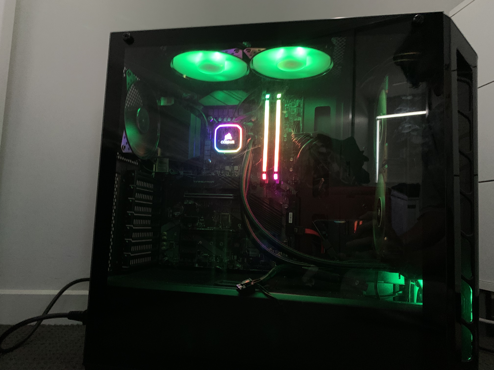

Why IT?
My interest in the field of IT started forming when I was 13. I was researching about gaming computers. I couldn’t stop watching videos about how the components worked and interacted with one another. I would spend hours each day, watching video after video. I was mesmerised by the depth of knowledge that could be learnt about the hardware components of computers (CPUs, GPUs etc.). By the time I had gathered enough money to build a gaming computer, I was well versed on how computer hardware components worked at the basic level. After I built my computer, my mum and all her friends asked me for IT help whenever they had an issue with their computers. I solved almost every complication, while I was only armed with the knowledge, I gained off YouTube. I loved helping people solve their computer issues but, I knew that I wanted to do something different as a career. I began to dabble in game development using Unreal Engine 4, and it soon became a passion of mine. I was going to enrol in a bachelor’s degree in game design but, I had personal issues which tied me down from going to a major city. I sat and contemplated if it was the right path for me, and then I remembered, the feeling I got from programming the game, the flow.
I decided to investigate computer science, I researched all the specialties and found that I was interested in many of them. I was initially interested in data science, then cloud computing but, I kept searching deeper into the field of technology and found so many more. Once I had finished my journey down the rabbit hole of the technology industry, I researched pathways to get a computer science degree. I had a flashback of someone telling me about Open Universities Australia. I searched on the site to find that there was an IT degree at RMIT. I read through the subjects while a smirk started to form on my face. The moment I looked through the subject list, I knew that the IT degree, is the degree for me.
During my degree, I expect to gain skills that are applicable to many different roles in the field of IT. I expect that I will become an effective team member, be able to solve various IT issues and, learn many software engineering skills. I expect that the skills I learn from this degree will transition into the technology industry smoothly and effectively. Learning about IT is one of my favourite things to do, and I know that my knowledge will only expand over the next few years at RMIT.
My current work in progress computer build